A very interesting field within science and history is archeoastronomy,
the study of how people and cultures in the past viewed the sky.
One wonderful example of archaeoastronomy is the astronomical ceiling in the Tomb of Senemut,
from Egypt around 1473 B.C.
Scientific history is interesting in general. For example, the mentor of the famous Johannes Kepler
was Michael Maestlin.
According to this paper from 1878, he created
the first catalog of the Pleiades star cluster in 1579.
Have you ever heard of the Mason-Dixon Line?
It is the line creating the borders between Pennsylvania, Delaware, and Maryland.
It turns out that Jeremiah Dixon and Charles Mason traveled together to
Cape Town, South Africa, to observe the transit of Venus in front of the Sun in 1761,
as detailed here.
Observing the transit of Venus was important because they could use measurements
from the transit to estimate the solar parallax,
and thus estimate the distance from Earth to the Sun. Mason and Dixon apparently
worked so well together that just two years later in 1763 they were sent to
the American colonies to settle a border dispute and create their famous line.
Math
If you have a set of data and you want to test if it is from a certain distribution,
you can use the Anderson-Darling test.
Here is the original paper from 1952.
Taking the Derivative Under the Integral, or, First Post
This was originally posted on my science blog on September 10, 2013.
Well, this is my first post. I'm just making this blog to record thoughts I have about science, school, my research, and anything else. I don't really expect anyone to read it, except maybe future me.
The first thing I'm going to post is a math trick that I really like. To me it's called 'taking a derivative under the integral.' I'm going to show how it works in the context of integrating the Planck function.
The Planck function is the 'spectral radiance' as a function of frequency (or wavelength), and it describes the radiation a blackbody at a certain temperature will emit.
'Spectral radiance' is a measure of energy, in units of W/m^2/Hz/sr (watts/meters^2/hertz/steradians, or, energy per time per area per frequency per solid angle). Here is the function:
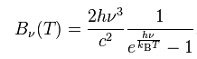
Integrating this function over all frequencies will give the total power per area per solid angle emitted by a blackbody at a certain temperature.
h*nu and k*T are both energies, and I'm going to assume that h*nu is much greater than k*T, so that (h*nu)/(k*T) is a large number, so that exp(h*nu/k/T) is a very large number, so that exp(h*nu/k/T) - 1 ~ exp(h*nu/k/T).
Now we have:
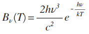
Since we don't care about the constants until the end, let's arbitrarily have 2*h/c^2 = N and h/k/T = M. Now we have:
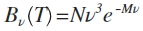
So, the integral we are concerned with is this:
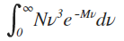
Since N is a constant, we can take it out of the integral, and just add it back in at the end. Now we have:
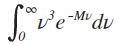
So, the idea is to add a variable in that we will make equal to 1 at the end, and take the derivative with respect to that variable so that the integral is simplified to something we can easily do.
I will add the variable alpha into the exponential, and keep in mind it will ultimately be equal to 1 so I'm not really changing anything:
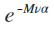
Now, we want to take the derivative of this with respect to alpha so that it can replace what we currently have in the integral. Here are the steps:
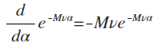
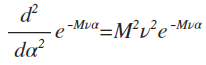
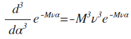
So, we're getting close to having what is in the integral. To fine tune it:
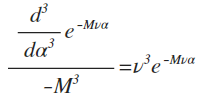
(Remember, alpha=1) So there we have it. Now we can substitute this into the integral:
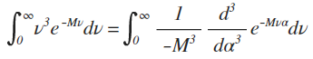
We can take the -1/M^3 out of the integral and put it back in later. We can also take the derivative out of the integral since it doesn't depend on nu. Now we have:
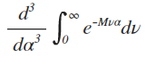
This integral is much simpler:
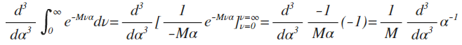
Now, we do the derivative:
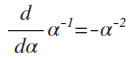
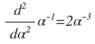
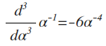
So, I will put the N and the -1/M^3 back in:
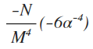
Now, we set alpha=1 and plug in N=2*h/c^2 and M=h/k/T, and get our final result!
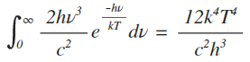
There you have it. This seems like an overly long process when I explain it all like this, but once you get the hang of it you can do it all pretty quickly.
You could also have done 'integration by parts,' but personally I find this method easier and more straightforward.
It also works for arbitrary exponentials:
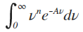
I'll leave it as an exercise to work it out yourself (heh ... it's fun, trust me!), but the solution is:
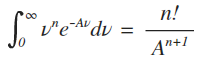
This is just one case, too. I bet there are tons of situations where it would be possible to 'differentiate under the integral.'
It's just nice to keep in mind if you have a tough integral in front of you.
That's all for my first post :)
Page written by Alex Spacek.
Last update: April 27, 2025